奎享雕刻1.7.8大刀阔斧的破解记录
本文仅用于学习交流，禁止用于商业用途
起因
为什么想起来尝试破解这个呢，这是公司用的写字机的上位机，发现里边的程序时java的，插着加密狗，有点好奇java是怎么读狗的，到最后也没研究明白，只研究到了它是调用dll的某个函数读狗的，dll逆向还看不懂
也是因为它是java的，会写java，有初步的了解，才敢下手尝试的。……
前言
破解的过程中也是取巧了，没有对解密函数进行分析（实在看不懂），提取了了已有的一个加密狗的生成的值，硬编码到了程序里边，令读狗函数固定返回这个硬编码。
废话也会很多，很详细的记录了过程
心得
勇于尝试，车到山前必有路。
中途遇到了一些小麻烦，反正是解决了。后边详述
正文
工具
- jar包解包工具：
- winrar(足够了)
- jar反编译工具：
- jd-gui-1.6.6.jar
- jadx-gui-1.2.0-no-jre-win.exe
- luyten-0.5.4.exe(没用上)
- class 字节码浏览器
- jclasslib_win64_5_8.exe
- 十六进制编辑器
- 010Editor v11.0.1 汉化特别版
- dll查看器
- IDA_Pro_v7.0_Portable
最后，写java代码的idea就不用介绍了吧，各位爱用啥用啥就是了
下载/安装/分析
下载安装跳过
- 打开文件夹看看
由于不会exe的逆向，而且体积这么大的一个jar，很值得打开瞧瞧。
直接用jar反编译工具打开，先找main函数（java的入口函数）
- 用jadx打开映入眼帘的就是com了，找吧，熟悉的launcher，很顺利，就在这里，那接下来的工作就比较简单了：
复制这个class的反编译代码，扔idea里开始做手术。
肯定提示缺包， 将这个大jar包作为lib引入就行（后边才知道，差点死在这一步，jar包没有混淆。我才能顺利的作为lib引入）
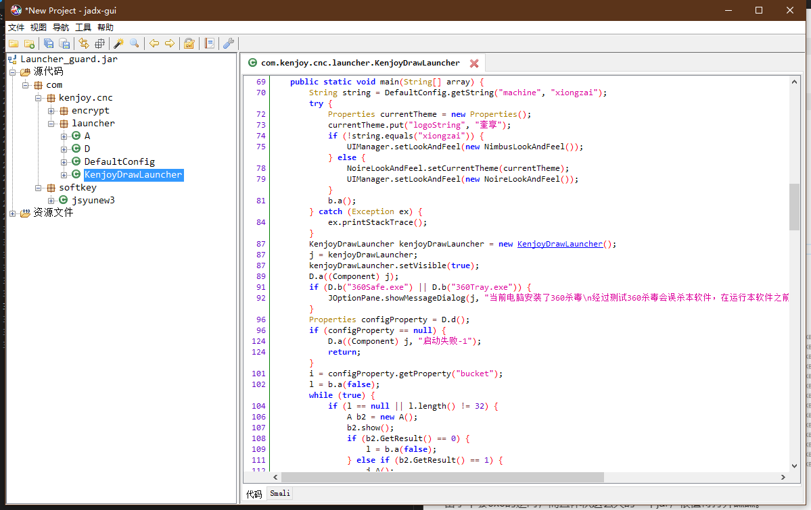
- 扔idea里之后就可以进行分析啦，上边无非都是读配置，环境检查
从这里才是引起我注意的代码。
i只是读了个配置，觉得有用，输出来看看，最后发现，似乎没啥用
l就是了，l就是读取的加密狗的函数，追进去看看都做了什么操作。
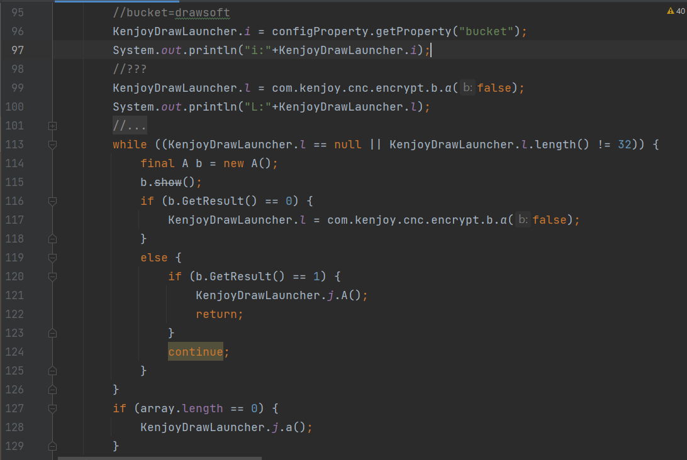
- 追l
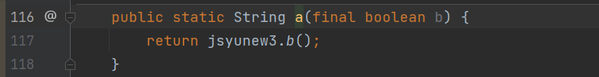
好家伙，就一行，继续追,一眼望去 一堆return “”;
既然是注册码，return “”;的统统干掉！
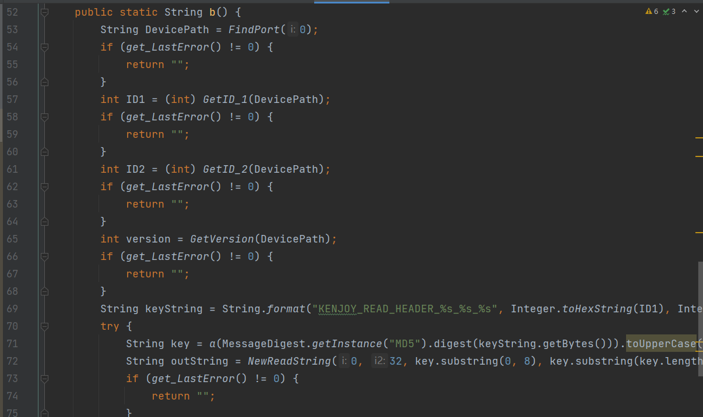
代码瞬间清爽了许多，可以看到 这个outstring一定就是狗里的东西了，而上边的DevicePath,ID1,ID2，就肯定是狗的信息了。
这就是我在这个函数中间写出outsting到文件之后，硬编码到return里了：
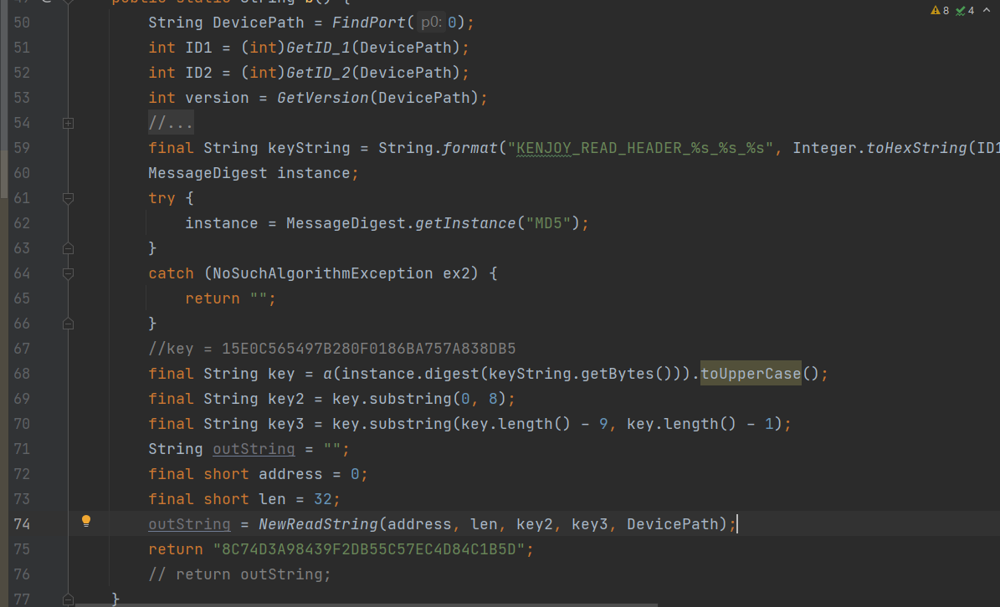
然后我还尝试用IDA查看了这个jsyunew3.dll的NewReadString，嗯，压根看不懂。就更没办法写注册机了（加密狗写注册机有毛用！摔！）
这个类上边有这个名字，这应该就是java加载dll的方式，但是还没研究明白，知道它加载了dll，调用了dll的函数，研究破解来说知道这些够用了，
就是这行调用了dll，确信，下边这些肯定就是形如接口一样的东西了。
1 | static { |
然后我就想到了第二个破解思路：能不能让这个return直接返回这个硬编码的字符串，以及那个FindPort函数能不能直接返回一个正确的值，这样就可以比较小的修改了，然后结果就是，不会！然后当场放弃。
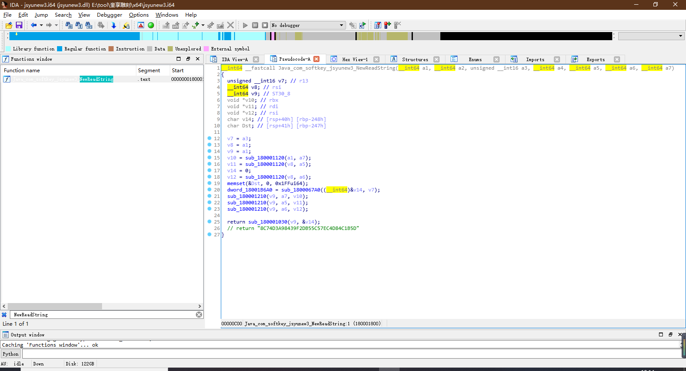
- 编译
然后就编译呗！用winrar打开jar，把编译后的这个jsyunew3.class替换掉,运行那个.exe，哦吼！
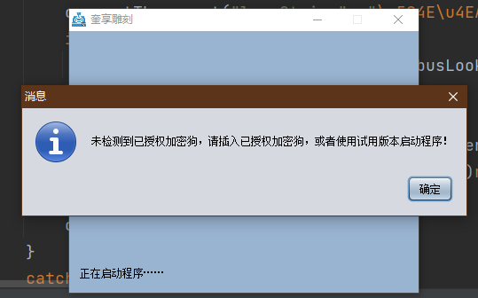
那还能怎么办，搜呗，既然是在窗口里，那很有可能在launcher这个里，用jad搜字符串找呗，然后就发现这个玩意果然在，那么，统统注释掉！
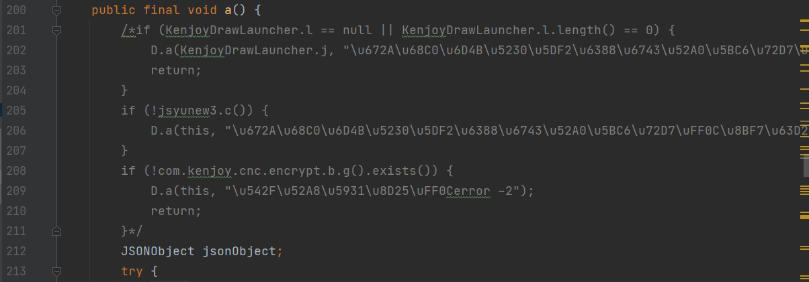
然后编译，打开！一路确认，然后又来一个，同样的操作，去jad里搜呗。
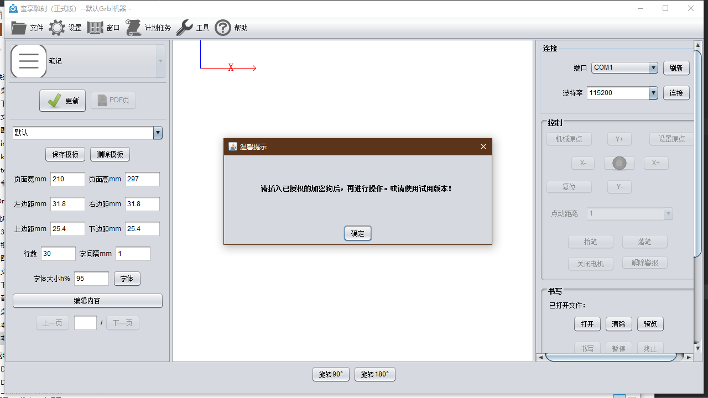
嗯？没有？
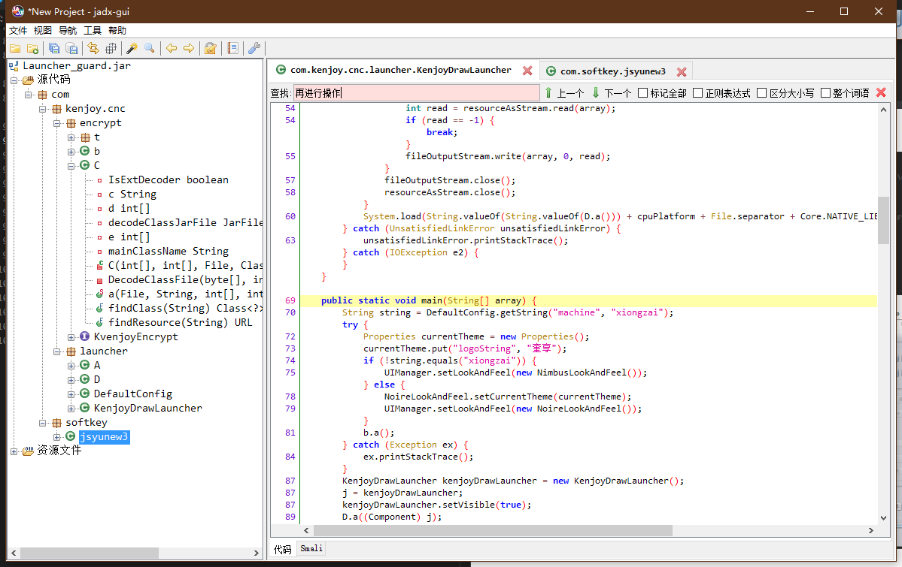
那肯定在其他类里，又不是只有一个类可以创建窗口，翻！
结果翻遍了每一个类，没有！
事情变得复杂了起来。那只有去分析main函数具体都做了什么了，然后看看为什么没有这一个字符串。 - 回头继续分析main
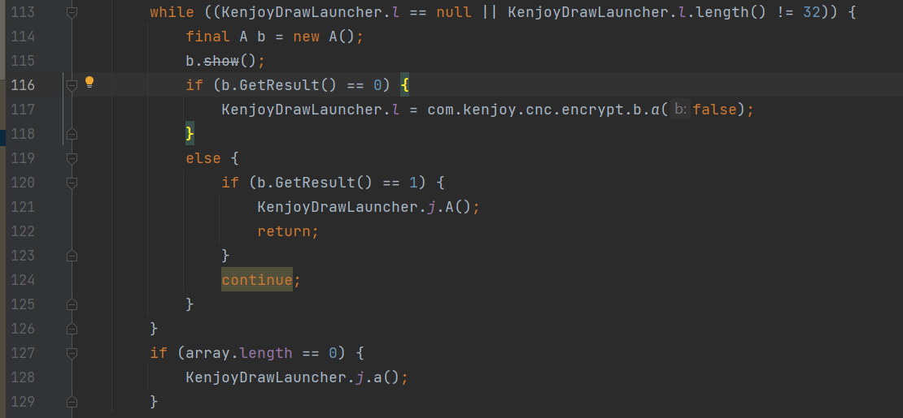
分析得出： 这个while是不断地弹框，如果没有插加密狗，肯定读不出来l 就会是上边第4里边return的空字符串，因为已经硬编码写死返回值了，所以这个while直接跳过，进入最终的KenjoyDrawLauncher.j.a(); - 追a();
哟，这不是刚注释了弹窗的那个方法嘛，接着往下看吧
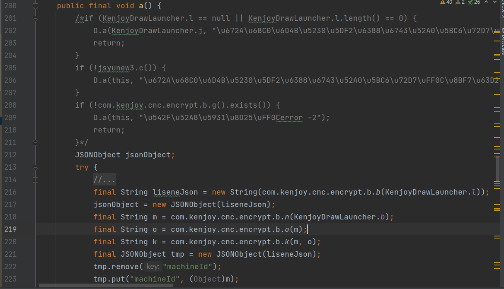
继续往下分析，从上往下，这是根据l创建了个json，然后操作了一番，咱这l肯定没有问题，就不管对l做什么了，没有意义。
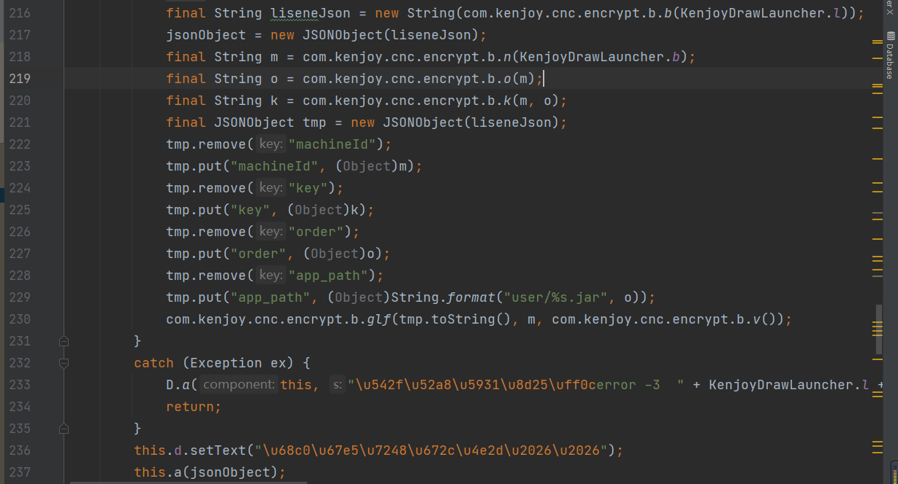
看最后，this.a(jsonObject);
不用说，追进去。
长这样
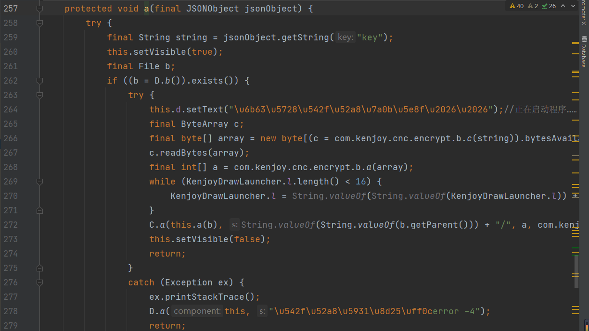
简单解释一下代码吧：
if这里判断了是否存在，追进去看
b=D.b() 追进去D.b()发现用了core这个文件。那这个core应该也是个jar，然后WinRar打开试试，发现打不开，010打开看文件头，啥也不是。不是jar，往后继续分析代码
往下看发现，又用到了l，先看看this.a(b) 看看对文件core做了什么
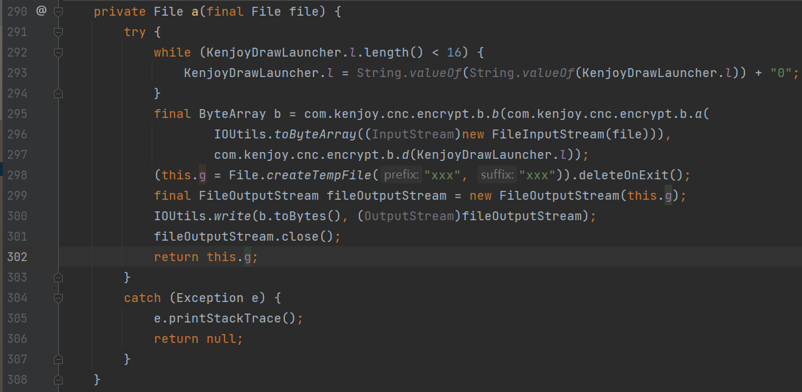
看不懂（破解到后边看懂了，实则是解密byte流），但是看得出来输出了一个前缀xxx后缀xxx的临时文件，退出时删除，然后最后返回值就是这个临时文件。那咱就去看看！
把这个临时文件复制出来之后，尝试用WinRar打开，哎呀，打开了，反编译！ - 反编译！
直接碰壁，一个源代码都反编译不出来。会不会是jadx不够强大，换换工具试试看，jd，luyten都试了，哪个都不行！
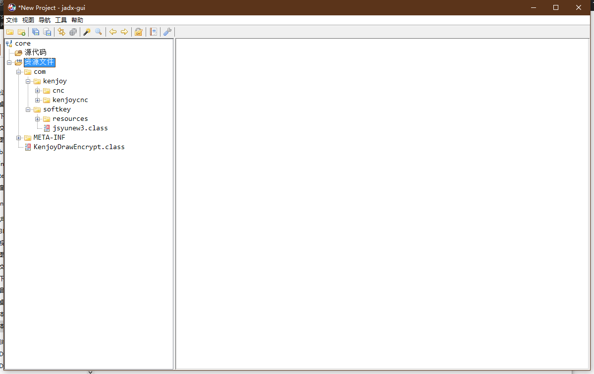
先保存一下进度，把这个临时文件重命名成core，替换掉安装目录里的core，然后让上边那个函数返回this.g的，直接返回file（执行了一堆寂寞）
然后我就去万能的Q群求助了，经过麦兜指点，忽略了一个问题，class的文件头（魔数）不对，不是class的文件头，也是这个时候知道了，文件头还叫魔数
既然文件头不对，那肯定就是加密了。继续分析！看看哪里解密class文件了！ - 寻找解密class的地方
那就继续找第7步第三个图的C.a(this.a(b),bulabulabula);了
追进去这个a();瞧瞧看,好家伙，继承了ClassLoader，想必就是传说中的类加载器，又是知识盲区，硬着头皮看吧。研究这个玩意是花费时间比较久的。
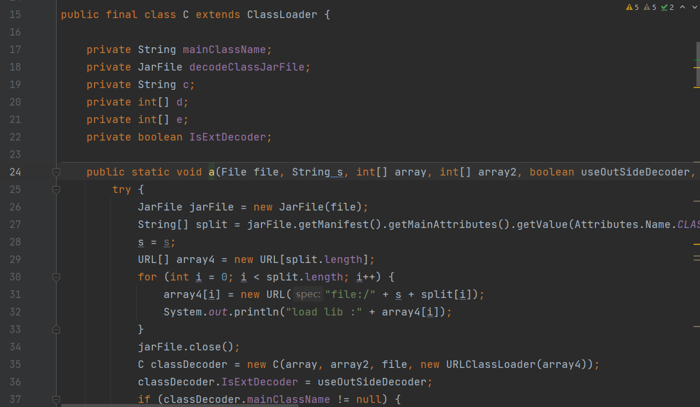
然后接下来再看a里都做了什么，翻来覆去的读。哪都不是解密class的啊！
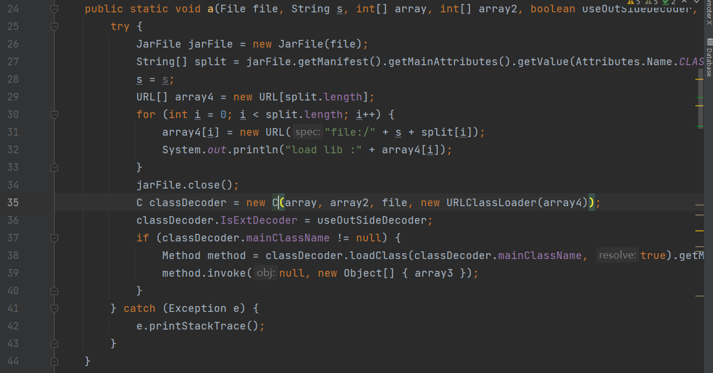
花了很长时间研究，然后后来脑子开窍了，既然是类加载器，那肯定是用来加载class的，既然加载class，文件头又对不上，那么加载之前一定是解密了，这个a里没有， 那肯定就在其他地方，寻找可疑函数。
最后定位到了findclass，英文直译：寻找类文件，嗯，满足猜想的一个方法。
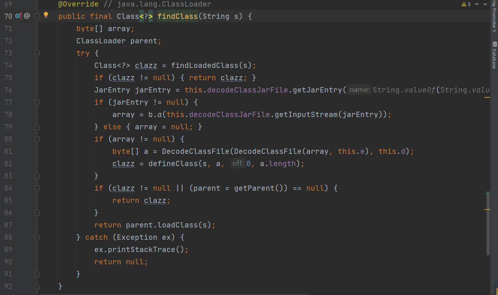
往里看,又发现了可疑方法DecodeClassFile,英文直译：解密类文件！
可算找到了，接下来事情就明朗了，跟搞core文件思路类似，还是大刀阔斧的修改，修改后如下，为啥要判断呢，因为要替换core里边的class。所以加上之后调试起来方便点。
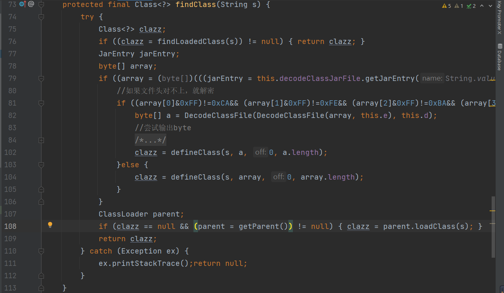
将这个字节数组a，导出成文件的代码如下
导出成文件写的代码也比较水,凑合看，这就是上边图例收起来的代码
也是通过导出s，判断出来传进来的s就是类的包名+类名，然后就这样输出了所有文件
1 | //尝试输出byte |
为啥要判断文件是否存在，是因为！ core这个jar同路径下有大小写不同的两个同名class（混淆过）！ 在windows下不区分大小写！然后我就装了个linux虚拟机，又是一上午。下了个arm64的 咋都装不进vmware，后来发现下错了，然后才下了个x86_x64的。然后问百度找linux替换class的命令，鼓捣jdk之类的，放进去了。
- 一切ok之后！就到了找“再进行操作”字符串的步骤了！
找到是在core.jar\com\kenjoy\kenjoycnc\k\a这个类里边
跟上边一样，大刀阔斧的修改，发现无法编译！
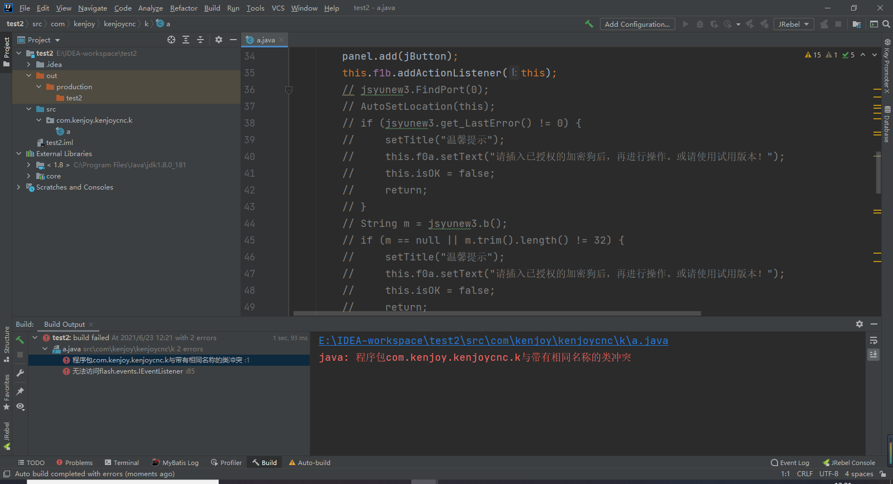
然后百度后的结果都指向了是因为混淆的原因。
然后没招了，祭出010editor，比较小剂量的修改，就是反转这两个if的判定结果，一个一个试。先反转第一个的判定结果
用jclasslib跟010都打开a.class
jclasslib：
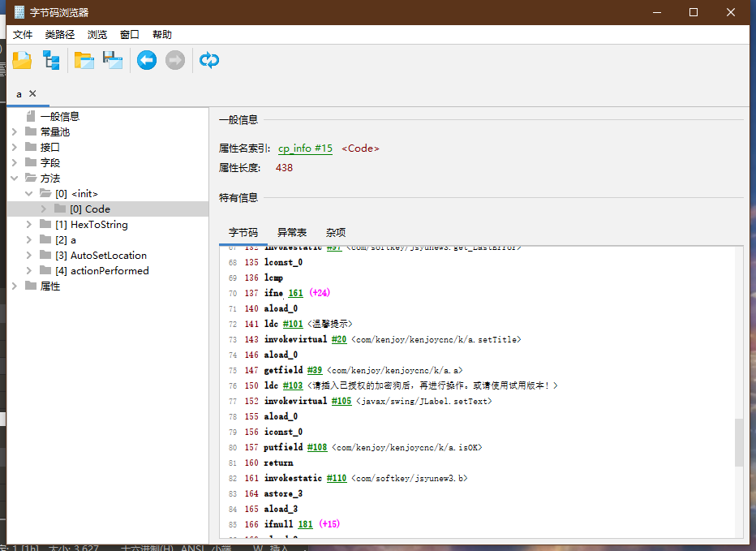
根据jclasslib的指示，在010editor里边找到method[0]的code部分的第137行
010editor：
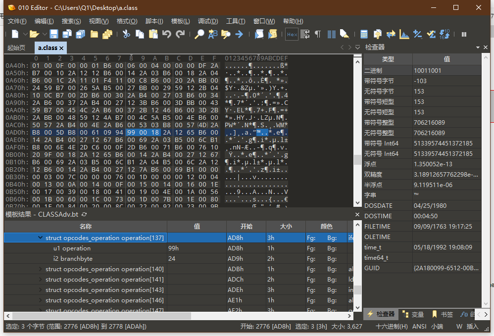
然后在jclasslib里点击ifeq，弹出来的页面搜索ifeq,往下看就能看到0x99对应ifeq,与ifeq相反的ifne的值为0x9A。
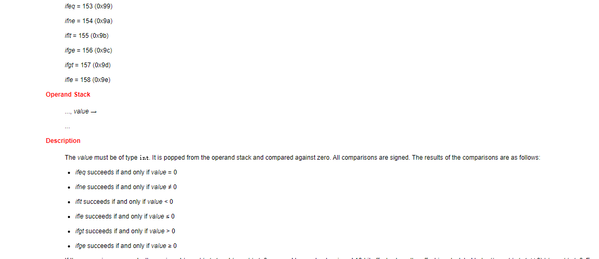
接下来只需要将99改为9A然后放回core里试试。
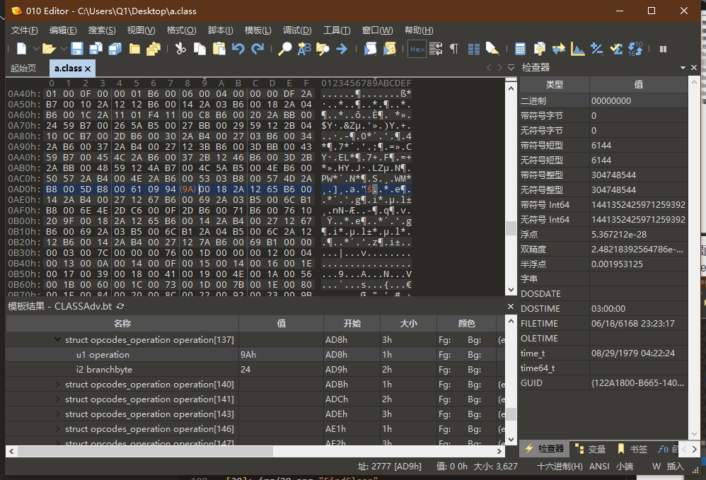
打开exe
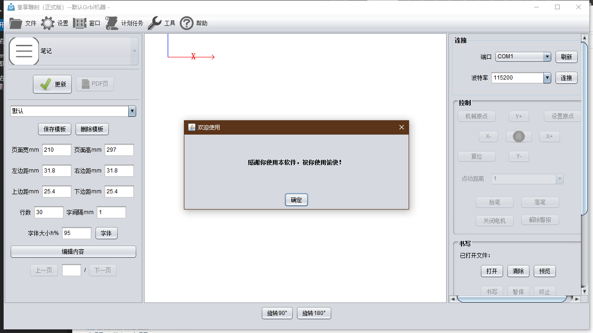
大功告成
最后
一边写一边复盘了整个过程，发现有很多地方确实是运气好，比如一开始，壳都没有查，混淆也没看，结果就是没有混淆没有壳，然后我才能很顺利的将第一个jar给反编译之后修改并编译回去。
最最后
提供下载链接
源文件+crack
链接：https://pan.baidu.com/s/1x5FBspSXtBeKGaqMsccckg
提取码：65a9
源文件：
链接：https://pan.baidu.com/s/1L-eCjF739AQD9BDml6_tCQ
提取码：gvhz